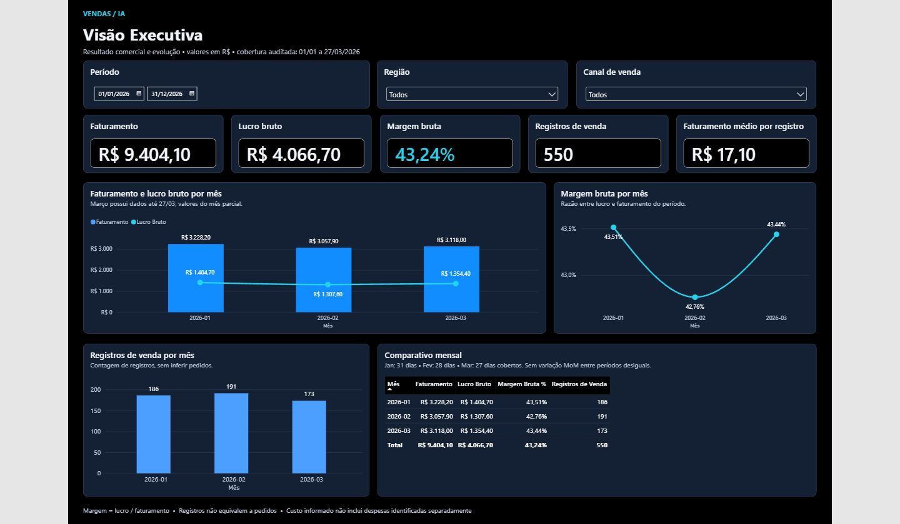

Business Intelligence
Dashboard de Vendas com IA
Dashboard gerencial para acompanhar indicadores financeiros e analisar vendas por produto, região e canal.
Desenvolvi duas páginas de análise, com auditoria de 550 registros e apoio de ferramentas e agentes de IA durante o desenvolvimento.
IA aplicada ao desenvolvimento. O pacote de fontes Power BI ainda está incompleto para reprodução independente.